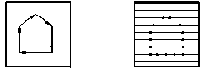
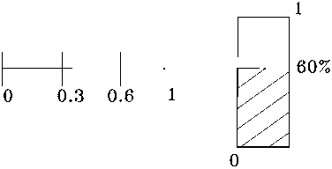
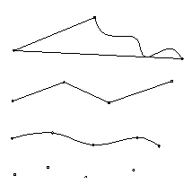
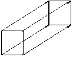

В соответствии с ГОСТ САПР представляет собой организационно-техническую систему, состоящую из комплекса средств автоматизации проектирования, взаимосвязанную с подразделениями проектной организации и выполняющую автоматизированное проектирование. Целью создания САПР является повышение качества и технико-экономического уровня проектируемых объектов, в том числе при их создании и применении; повышение производительности труда, сокращение сроков, уменьшение стоимости и трудоемкости проектирования.
САПР - это человеко-машинная система, позволяющая на базе ЭВМ автоматизировать определенные функции, выполняемые человеком, с целью повышения темпов и качества проектирования, представляющая собой вид информационного процесса, лежащего в основе технической подготовки производства.
Особенно эффективно применение ЭВМ на начальных стадиях проектирования машиностроительных объектов, когда формируются основные конструктивные, прочностные, компоновочные, технологические, экономические и другие характеристики будущего объекта. САПР предусматривает комплексную автоматизацию процесса проектирования вплоть до выпуска проектно-графической документации.
Структурно САПР подразделяется на ряд подсистем, обеспечивающих комплексную разработку проектно-сметной документации на основе использования ЭВМ, оснащенных различными периферийными устройствами, в том числе дисплеями и графопостроителями. Одной из таких подсистем является подсистема машинной графики (МГ).
Машинная графика - это создание, хранение и обработка моделей объектов и их изображений с помощью ЭВМ.
Машинная графика в автоматизированном проектировании позволяет:
освободить человека от выполнения однообразных, трудоемких графических операций, которые можно формализовать и тем самым повысить производительность труда в проектировании, так как трудозатраты на выполнение, например, рабочих чертежей объектов машиностроения составляют значительную часть общего объема проектных работ;
благодаря возможности быстрого перебора многих вариантов, решать одну из основных задач проектирования - поиск оптимального варианта;
обеспечивать естественную связь человека с ЭВМ на уровне основной продукции инженера любой специальности - графической.
Машинная графика, как подсистема САПР, включает в себя методическое, лингвистическое, математическое, программное, техническое, информационное и организационное обеспечение .
Методическое обеспечение - документы, в которых отражены состав, правила отбора и эксплуатации средств автоматизации проектирования.
Лингвистическое обеспечение - языки проектирования, терминология, правила формализации естественного языка.
Математическое обеспечение - основано на методе математического моделирования, согласно которому математическая структура, отношения элементов в математической модели соответствуют структуре и отношениям в реальном объекте. В МГ используется геометрическая версия математического моделирования, при котором двумерные и трехмерные изображения состоят из точек, линий и поверхностей.
Программное обеспечение - включает программы на машинных носителях, тексты программ и эксплутационную документацию. Основу программного обеспечения МГ составляют пакеты прикладных программ (ППП), представляющие собой набор программ, реализующих на ЭВМ инвариантные и объектно-ориентированные графические процедуры.
Техническое обеспечение - устройства вычислительной и организационной техники, средства передачи данных, измерительные и другие устройства или их сочетания.
Информационное обеспечение - документы, содержащие описание стандартных проектных процедур, типовых проектных решений, типовых элементов, комплектующих изделий, материалов и другие данные, а также файлы и блоки данных на машинных носителях с записью указанных документов.
Организационное обеспечение - положения, инструкции, приказы, квалификационные требования и другие документы, регламентирующие организационную структуру подразделений и взаимодействие их с комплексом средств автоматизации проектирования.
В современных САПР большое внимание уделяется геометрическим представлениям и описаниям математических моделей объектов проектирования, начиная от выработки основной концепции проекта и заканчивая созданием рабочей документации. Значительный объем геометрических построений выполняется и в автоматизированных системах научных исследований (АСНИ), системах управления (АСУ), управления технологическими процессами (АСУ ТП).
Все многообразие геометрических задач, решаемых средствами МГ - подсистемы САПР - можно разделить на два основных класса:
формирования и описание геометрических структур различной сложности и решения на них комплекса прикладных задач;
отражения на различных этапах проектирования входной, выходной и промежуточной информации.
Разработка эффективных машинных алгоритмов решения геометрических задач является на данном этапе важнейшей задачей специалистов в области САПР, прикладной геометрии и инженерной графики. Основные требования при их разработке: сочетание универсальности с простотой реализации, вплоть до создания разветвленности решения, базирующегося на основе единого информационного задания и общего алгоритмического модуля; устойчивость алгоритмов на всем классе предусматриваемых объектов; соответствие точности решения проектно-заданной; минимальный объем загрузки оперативной памяти при реализации алгоритма на ЭВМ и некоторые другие.
Разработка машинно-ориентированных методов решения геометрических задач в настоящее время базируется на методах аналитической, вычислительной и дифференциальной геометрии, компьютерного моделирования, графических методах аппроксимации, интерполирования и оптимизации, различных итерационных методов и др.
Методы, алгоритмы и программы этапа эскизного проектирования изделий машиностроения, формообразования архитектурных сооружений должны быть тесно связаны с последующими этапами проектирования (например, с этапом прочностных расчетов), общей структурой и базой данных.
Задача отображения на различных этапах проектирования входной, выходной и промежуточной информации включает в себя два основных направления: создание разновидностей подсистемы машинной графики; разработку проблемно-ориентированных документирующих подсистем.
Алгоритмы машинной графики, используемые для отображения входной, выходной и промежуточной информации, в геометрическом отношении не представляют сложности. На первый план здесь выступают логические задачи, задачи удовлетворения системным требованиям, учет возможностей технического обеспечения.
Однако многие задачи машинной графики носят геометрический характер. Важной проблемой является возможность получения и преобразования наглядных изображений в различных проекционно-изобразительных системах (перспектива, аксонометрия, ортогональные проекции) на экране графического дисплея в режиме графического диалога пользователя с ЭВМ. При решении такой задачи повышаются требования к гибкости математических моделей, появляется необходимость в разработке алгоритмов, осуществляющих обратную связь, - восстановление математической модели измененного объекта и процедур, обеспечивающих пути многовариантных решений.
Применение машинной графики
В применении машинной графики различают два уровня:
пассивная графика, когда с помощью пакета прикладных программ производятся формирование и вывод графических изображений;
интерактивная графика - процесс оперативного графического взаимодействия (диалога) человека с ЭВМ.
Интерактивная машинная графика представляет собой важный раздел МГ, когда пользователь имеет возможность динамически управлять содержанием изображения, его формой, размерами и цветом на поверхности дисплея с помощью интерактивных устройств взаимодействия, например клавиатуры, мыши, трекбола и т.п.
Интерактивная машинная графика существенно повышает эффективность диалога пользователя с ЭВМ за счет использования сочетания графического информации с текстовой. В итоге повышается качество и точность результатов, снижаются объемы рутинной работы.
Типичными примерами использования интерактивной графики являются следующие области:
создание графиков, гистограмм, диаграмм;
геоинформационные системы, картография;
автоматизация чертежных и конструкторских работ; САПР; проектирование компонент и систем механических, электрических, электромеханических и электронных устройств; проектирование и моделирование в авиа-, судо-, автомобилестроении; архитектура, дизайн, геология;
моделирование спецэффектов, мультипликация, заставки;
управление процессами;
автоматизация канцелярских работ, электронный документооборот, электронная публикация;
искусство и реклама;
графические интерфейсы операционных и прикладных систем, броузеров для Интернета и WEB-серверов; компьютерные игры, библиотеки и энциклопедии на СD-ROM, интерактивное кино.
1. Тип объекта:
а) линейные рисунки двумерных объектов;
б) каркасное представление трехмерных (3D) объектов;
в) каркасное представление 3D объектов с удалением невидимых линий.
г) поверхностное представление 2D объектов. Двумерные тоновые изображения - черно-белые и цветные;
д) трехмерное поверхностное представление 3D объектов с удалением невидимых линий и поверхностей;
е) трехмерное поверхностное представление 3D объектов с удалением невидимых линий и поверхностей и отображением фактур поверхностей;
ж) твердотельное представление объектов.
2.Тип выводимого изображения:
а) ортогональные проекции;
б) аксонометрия (косоугольная, прямоугольная);
в) перспектива, наглядные изображения.
3. Тип интерактивности и уровень возможностей для управления диалогом и изображением:
а) автономное вычерчивание по готовой базе данных с помощью прикладной программы на графопостроителе;
б) интерактивный диалог по созданию чертежей по готовой базе данных;
в) интерактивный графический диалог по созданию чертежей и интерактивное графическое пространственное проектирование.
4. Роль изображения:
а) цель. Инструментальное средство. Архитектура, дизайн, картография, реклама, искусство;
б) компонента. Подсистема САПР.
В свою очередь, использование и распространение машинной графики становится оправданным для широкого круга приложений вследствие быстрых темпов удешевления аппаратно-технических средств.
Технические средства МГ. Устройства вывода изображения
Дисплеи. По принципам формирования изображения дисплеи можно разделить на векторные и растровые.
В векторных дисплеях блок управления и отклоняющая система допускают произвольное перемещение луча. В векторных дисплеях для изображения прямой линии требуются (запоминаются) координаты начала и конца отрезка, и генератор векторов перемещает электронный луч строго по прямой линии от одной точки к другой. Время рисования отрезка прямой в таком дисплее составляет 2-50 мкс (в зависимости от скорости работы генератора векторов и длины отрезков). Электроннолучевые трубки (ЭЛТ) векторных дисплеев бывают с регенерацией изображений и запоминающие.
Для создания на экране ЭЛТ с регенерацией изображения картины, воспринимаемой человеком без мерцания, необходимо 25-60 раз в 1 с повторять (регенерировать) изображение. В запоминающих ЭЛТ время послесвечения измеряется часами. Запоминающие ЭЛТ используются в статических дисплеях, в которых возможна лишь полная смена изображения - стирание предыдущего изображения и вывод нового - за время, измеряемое десятками секунд. ЭЛТ с регенерацией изображения используются в динамических дисплеях, обеспечивающих возможность изменения выводимого изображения по командам ЭВМ или человеком. При этом фактически происходит полная смена изображения, но за время одного цикла регенерации, т.е. 0,02-0,04 с.
Основной недостаток изображений, получаемых на векторном дисплее, - невозможность получения тоновых и полутоновых изображений.
В растровых дисплеях изображение формируется следующим образом.

Растровые дисплеи, в свою очередь, можно разделить на следующие виды по видам технической реализации: наиболее распространенные - на базе электроннолучевой трубки (аналогичной телевизионной), жидкокристаллические, плазменные.
Принтеры. По способу получения изображения принтеры делятся на матричные, струйные, лазерные. Характерные критерии оценки каждой технологии при формировании изображения:
скорость вывода изображения;
качество полученного изображения;
относительная стоимость полученного изображения.
Графопостроители. По технологии формирования изображения различаются перьевые, струйные, лазерные. Графопостроители (плоттеры) имеют важную характеристическую особенность - формат (размер) выводимого изображения. Графопостроители различных моделей имеют возможность выводить изображения форматов А0, А1, А2, А3, А4.
Следует отметить еще одну разновидность плоттеров - катеры. Катеры ( от англ. cuter - резак) - устройства для получения выкроек , шаблонов из листового материала, например пленок, тканей и т.д. Вместо пишущего элемента у катера имеется нож, который прорезает материал, в результате чего получаются требуемые выкройки, шаблоны и т.д.
Устройства ввода
В рамках рассматриваемой предметной области следует ввести понятие, которое определяет инвариантный набор устройств взаимодействия с любой подсистемой проектирования - логические интерактивные устройства. К ним относятся:
1. Логические устройства ввода:
кнопка (устройство для задания выбора);
селектор (устройство для указания информации выведенной на экран);
клавиатура (устройство для ввода цепочек литер);
валуатор (устройство для генерации величин с плавающей точкой);
локатор (устройство для задания экранных координат).
Каждое из этих логических устройств отвечает за определенный вид взаимодействия и ввода информации. Следует отметить, что каждому логическому устройству ввода можно поставить в соответствие физическое устройство ввода.
2. Физические устройства ввода:
клавиатура;
световое перо;
мышь, трекболл, трекпоинт, джойстик;
планшет, диджитайзер;
шар, рычаг;
двухмерный или трехмерный звуковой планшет;
сканер.
При этом следует отметить, что для реализации полноценного взаимодействия с подсистемами проектирования нет необходимости в наборе всех физических устройств ввода.
Методы моделирования логических устройств
Интерактивный диалог в графических программах требует наличия логических устройств ввода - локатора, селектора, валуатора, клавиатуры и кнопок.
Однако логическую функцию любого из этих устройств можно реализовать с помощью физического устройства из любого другого класса, хотя не всегда удачно.
С другой стороны, не всегда целесообразно, чтобы для каждого логического устройства имелись отдельные физические устройства.
Многие распространенные интерактивные графические системы имеют позиционирующие устройства (планшет, мышь) и клавиатуру с функциональными кнопками. С помощью этих трех физических устройств реализуются все логические функции. Ниже представлены логические устройства ввода и возможные физические устройства для их (логических устройств) моделирования.
Моделирование локатора
Световое перо;
Управление курсором с клавиатуры;
Управление курсором параметрически с клавиатуры. Ввод координат;
Управление курсором мышью
Моделирование селектора
Выбор курсором объекта;
Ввод с клавиатуры имени объекта.
Моделирование валуатора
Ввод значения на клавиатуре;
Работа со шкалой.

Моделирование клавиатуры
Распознавание литер. Распознавание рукописных текстов;
Изображение клавиатуры на дисплее.
Моделирование кнопок
Меню иерархическое, которое делится на статическое и динамическое;
Световые кнопки.
Методы интерактивного графического взаимодействия
При реализации графического взаимодействия следует определить операции ввода.
Указывание - интерактивная графическая операция, позволяющая идентифицировать поименованную часть графического изображения (сегмент или примитив) для системы указанием его на экране дисплея.
При помощи указывания оператор сообщает программе, с каким объектом он желает производить операции.
При наличии эхо-отображения указанный объект выделяется на экране. Эхо-отображение - системнозаданная обратная связь, реализующая возможность визуального восприятия оператором результата ввода. Эхо-отображение может выражаться мерцанием, увеличением яркости цвета, типом линии, текстовым сообщением.
Подсказкой называется краткое описание существующей альтернативы. Подсказка может выражаться текстовой строкой, подсветкой и др.
Позиционирование - метод определения координат заданной точки экрана. Основная цель позиционирования - размещение объектов, графические построения.
Ввод команд – операция, сообщающая системе управляющую информацию. Как правило, при вводе команд осуществляется выбор из нескольких альтернатив.
Ввод чисел - операция ввода скалярных величин.
Ввод символов - операция ввода в машину алфавитно-цифровых символов.
Эскизирование и построение чертежей
При непосредственном создании графического изображения при эскизировании или создании чертежа можно выделить следующие методы для получения графических изображений:
метод резиновой нити;
рисование.

Методы повышения точности построений
отображение сетки;
введение координаты X=0 , Y=0;
задание шага перемещения X=0 , X=1 , X=2.
Перемещение объектов методом слежения

Трехмерные интерактивные графические методы
Трехмерные интерактивные графические методы предназначены для графического ввода и моделирования трехмерных объектов в процессе диалога человека с ЭВМ. Они в основном имеют аналоги двухмерных методов интерактивного ввода. Трехмерные интерактивные графические методы являются рабочим инструментом для выполнения графических построений с целью моделирования непосредственно на перспективных и аксонометрических изображениях, а также в ортогональных проекциях.
Трехмерное позиционирование - метод графического задания точки в модели пространства, наглядные изображения или ортогональные проекции которого воспроизводятся на экране дисплея. Основная цель - формирование 3D объектов и размещение их в пространстве. Различаются следующие виды трехмерного позиционирования: в пространстве, на плоскостях пространства, на поверхностях.
Позиционирование в пространстве - графическое задание точки в моделируемом пространстве вне поверхностей объектов и получение ее трехмерных координат. Основной способ - использование УПС (управляемого пространственного символа, локатора).
Позиционирование на плоскостях пространства - метод предназначен для задания точки в пространстве, указанием ее на наглядном изображении или ортогональной проекции отсека плоскости, которой должна принадлежать точка. Для определения трехмерных координат этой точки решается задача на пересечение проецирующего луча, соответствующего указанной точки, с данной плоскостью.
Метод позиционирования на поверхностях - метод предназначен для задания точки в пространстве указанием ее на наглядном изображении или ортогональной проекции поверхности, которой точка должна принадлежать. Аналогично позиционированию на плоскостях пространства для определения трехмерных координат этой точки решается задача на пересечение проецирующего луча, соответствующего указанной точки, с данной поверхностью.
Трехмерное указывание - интерактивный графический прием, позволяющий идентифицировать для системы существующий сегмент, объект, указыванием его на экране дисплея на наглядном изображении моделируемого пространства.
Специальные методы трехмерного интерактивного графического моделирования
Трассирование - метод графического задания линий в моделируемом пространстве. Основан на методах трехмерного позиционирования. Различается трассирование в пространстве, плоскостях, поверхностях.
Трассирование в пространстве - метод графического задания трассируемой линии в моделируемом пространстве вне поверхностей объектов и получение её (трассируемой линии) трехмерных координат. Основной способ - использование УПС.
Трассирование на плоскостях пространства - метод предназначен для задания трассируемой линии в пространстве указанием ее на наглядном изображении или ортогональной проекции отсека плоскости, которой должна принадлежать трассируемая линия.
Трассирование на поверхностях - метод предназначен для задания трассируемой линии в пространстве указанием ее на наглядном изображении или ортогональной проекции поверхности, которой должна принадлежать трассируемая линия. Аналогично позиционированию на плоскостях пространства для определения трехмерных координат этой точки решается задача на пересечение проецирующего луча, соответствующего указанной точки, с данной поверхностью.
Пространственная резиновая нить - метод графического задания прямой в моделируемом пространстве, при котором выполняется постоянное высвечивание отрезка, соединяющего его первую точку с текущим положением УПС.
Трехмерное перемещение - метод размещения объектов в моделируемом пространстве посредством управляемого перемещения с визуальным контролем.
Трехмерное вращение - метод вращения объекта в моделируемом пространстве посредством управляемого вращения с визуальным контролем вокруг оси, задаваемой графически.
Математическое обеспечение КГ
Математическое обеспечение подсистем геометрического проектирования, как компонента САПР базируется на следующих дисциплинах:
1) начертательной геометрии;
2) аналитической геометрии;
3) дифференциальной геометрии;
4) проективной геометрии;
5) математического анализа;
6) теория алгоритмов (скорость, эффективность, точность);
7) вычислительной геометрии.
| |